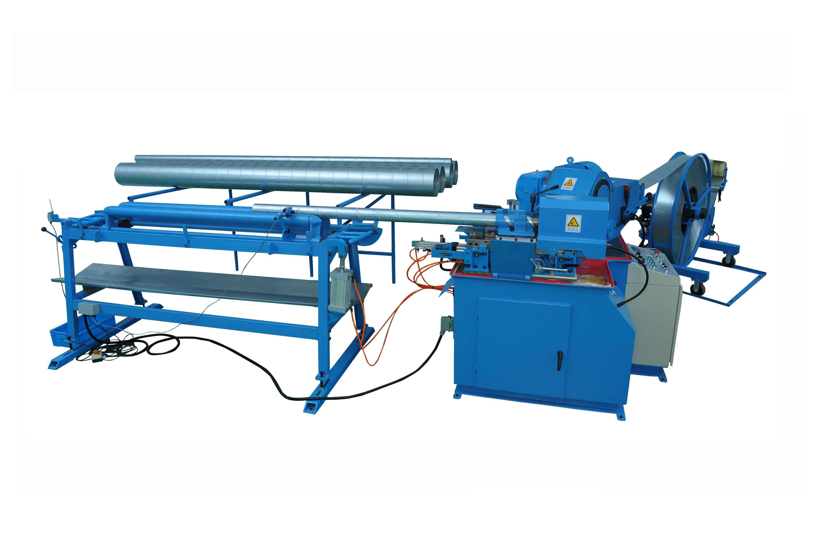

Core category page · Since 1995 · 80+ countries · 5000+ machines installed · 60+ patents
Spiral Duct Machine Solutions for Round HVAC Duct Production
Designed for buyers producing round spiral ducts at industrial scale. Use this guide to compare tubeformer configurations, end-finishing machines, and planning factors before purchase.
Category authority guide for structured HVAC duct production planning.

What this category is
A focused category definition for faster top-level qualification.
A spiral duct machine category centers on tubeformers and related finishing equipment that convert strip/coil material into spiral round ducts. It is chosen when buyers prioritize round duct output, consistent seam formation, and efficient length-based production.
When to choose this
Use these signals to decide if this category fits your workflow.
- You supply projects that frequently specify round spiral duct systems.
- You need repeatable seam quality and cleaner geometry across production shifts.
- You want to reduce manual handling in long straight-duct production.
- You need to pair main tubeforming with end-finishing and seam-closing steps.
- You are planning around coil-based feeding and throughput-oriented operation.
- You want a machine set that can scale from compact to higher-capacity models.
Core machines in this category
Compare the core machine groups used in this production track.
- Spiral Tubeformer SBTF‑1602 — Industrial flying-shear spiral duct production.
- Spiral Tubeformer SBTF‑1500 — Compact footprint option for daily round duct output.
- Spiral Tubeformer SBTF‑1500C — Compact spiral duct machine for standard factory use.
- Spiral Tubeformer SBTF‑2020 — High-capacity model for larger diameter requirements.
- Spiral Duct Flanging Machine — Forms flanges on spiral duct ends for connection preparation.
- Snail Seam Closing Machine SBWKHFJ‑45 — Supports seam finishing tasks in spiral workflows.
Typical production workflow
A clear step sequence from raw material to quality release.
- Material loading: prepare strip/coil and feeding parameters.
- Spiral forming: tubeformer creates the round spiral duct body continuously.
- Length and end processing: cut to required lengths and prepare ends/flanges.
- Seam and connection finishing: complete required seam closure or edge treatment.
- Quality control: verify diameter consistency, seam condition, and final fit for installation.
Key buying criteria
Prioritize these checkpoints before model shortlisting and layout lock-in.
- Capacity/output: Define target shift output and identify the real bottleneck step before choosing machine configuration.
- Labor/automation: Match automation level to labor availability, operator skill structure, and consistency requirements.
- Material range: Confirm compatibility with your recurring material grades and thickness range.
- Floor space/layout: Validate infeed/outfeed flow, handling paths, and service access before finalizing the machine plan.
- Power/voltage/export: Confirm local electrical standards, plant utilities, and export documentation/commissioning expectations.
FAQs
Quick answers to common category-level buying questions.
What capacity range is typical for a spiral duct machine line?
Capacity varies by model, duct diameter range, material, and shift organization. Buyers normally compare realistic shift targets instead of relying on a single headline number.
How do I select between compact and high-capacity tubeformers?
Choose based on your project mix, diameter requirements, floor space, and expected production rhythm. Compact models fit flexible shops; larger models are preferred for sustained heavy output.
What materials are commonly processed?
Spiral duct production commonly uses galvanized steel, stainless steel, and aluminium depending on project standards and application.
How should material thickness be planned?
Define your recurring job thickness range first. Then confirm machine suitability and tooling setup for that band to maintain seam quality and forming stability.
Is installation difficult for first-time spiral duct buyers?
Installation is usually manageable with proper site preparation for power, coil handling, and operator training. Commissioning focuses on stable forming and cutting accuracy.
What maintenance matters most?
Key points are forming head condition, roller wear, lubrication, alignment, and clean feeding paths. Preventive checks are important for steady seam quality.
Can we integrate spiral machines with other duct equipment?
Yes. Spiral production is often combined with fittings, flanging, and rectangular lines in one factory plan depending on order mix.
Where can I review machine videos before buying?
You can review operating footage on the videos page and then request a quote with your target diameter and workflow requirements.
Plan the Right Spiral Duct Machine Solutions for Round HVAC Duct Production Setup
Share your duct types, production targets, and material range. SBKJ can help map a practical machine configuration.
Next best step
Move Forward with Confidence
Continue your category review or move straight to commercial discussion.